Fitting odin models with monty
A pragmatic introduction
Previously, on “Introduction to odin”
- We created some simple compartmental models
- We ran these and observed trajectories over time
- We saw that stochastic models produce a family of trajectories
The data
We have some data on the daily incidence of cases
The data
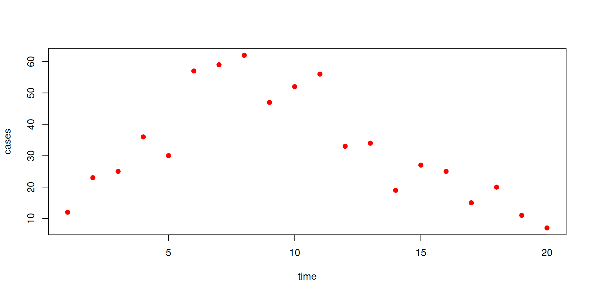Our model
Let’s fit these data to a model
sir <- odin({
update(S) <- S - n_SI
update(I) <- I + n_SI - n_IR
update(R) <- R + n_IR
update(incidence) <- incidence + n_SI
p_SI <- 1 - exp(-beta * I / N * dt)
p_IR <- 1 - exp(-gamma * dt)
n_SI <- Binomial(S, p_SI)
n_IR <- Binomial(I, p_IR)
initial(S) <- N - I0
initial(I) <- I0
initial(R) <- 0
initial(incidence, zero_every = 1) <- 0
N <- parameter(1000)
I0 <- parameter(10)
beta <- parameter(0.2)
gamma <- parameter(0.1)
})We will link cases in the data to incidence in the model, and we will treat beta and gamma as unknown parameters to be estimated
Adding likelihood to the model
sir <- odin({
update(S) <- S - n_SI
update(I) <- I + n_SI - n_IR
update(R) <- R + n_IR
update(incidence) <- incidence + n_SI
initial(S) <- N - I0
initial(I) <- I0
initial(R) <- 0
initial(incidence, zero_every = 1) <- 0
p_SI <- 1 - exp(-beta * I / N * dt)
p_IR <- 1 - exp(-gamma * dt)
n_SI <- Binomial(S, p_SI)
n_IR <- Binomial(I, p_IR)
N <- parameter(1000)
I0 <- parameter(10)
beta <- parameter(0.2)
gamma <- parameter(0.1)
cases <- data()
cases ~ Poisson(incidence)
})Calculating likelihood: particle filtering

Calculating likelihood
Filtered trajectories
dust_likelihood_run(filter, list(beta = 0.4, gamma = 0.2),
save_trajectories = TRUE)
#> [1] -87.92554
y <- dust_likelihood_last_trajectories(filter)
y <- dust_unpack_state(filter, y)
matplot(data$time, t(y$incidence), type = "l", col = "#00000044", lty = 1,
xlab = "Time", ylab = "Incidence")
points(data, pch = 19, col = "red")
Particle MCMC
So we have a marginal likelihood estimator from our particle filter
How do we sample from beta and gamma?
We need:
- to tidy up our parameters
- to create a prior
- to create a posterior
- to create a sampler
“Parameters”
- Our filter takes a list of
betaandgamma,pars- it could take all sorts of other things, not all of which are to be estimated
- some of the inputs might be vectors or matrices
- Our MCMC takes an unstructured vector \(\theta\)
- we propose a new \(\theta^*\) via some kernel, say a multivariate normal requiring a matrix of parameters corresponding to \(\theta\)
- we need a prior over \(\theta\), but not necessarily every element of
pars
- Smoothing this over is a massive nuisance
- some way of mapping from \(\theta\) to
pars(and back again)
- some way of mapping from \(\theta\) to
Parameter packers
Our solution, “packers”
packer <- monty_packer(c("beta", "gamma"))
packer
#>
#> ── <monty_packer> ──────────────────────────────────────────────────────────────
#> ℹ Packing 2 parameters: 'beta' and 'gamma'
#> ℹ Use '$pack()' to convert from a list to a vector
#> ℹ Use '$unpack()' to convert from a vector to a list
#> ℹ See `?monty_packer()` for more informationWe can transform from \(\theta\) to a named list:
Parameter packers
Bind additional data
Parameter packers
Cope with vector-valued parameters in \(\theta\)
packer <- monty_packer(array = c(beta = 3, gamma = 3))
packer
#>
#> ── <monty_packer> ──────────────────────────────────────────────────────────────
#> ℹ Packing 6 parameters: 'beta[1]', 'beta[2]', 'beta[3]', 'gamma[1]', 'gamma[2]', and 'gamma[3]'
#> ℹ Use '$pack()' to convert from a list to a vector
#> ℹ Use '$unpack()' to convert from a vector to a list
#> ℹ See `?monty_packer()` for more information
packer$unpack(c(0.2, 0.21, 0.22, 0.1, 0.11, 0.12))
#> $beta
#> [1] 0.20 0.21 0.22
#>
#> $gamma
#> [1] 0.10 0.11 0.12Priors
Another DSL, similar to odin’s:
This is a “monty model”
prior
#>
#> ── <monty_model> ───────────────────────────────────────────────────────────────
#> ℹ Model has 2 parameters: 'beta' and 'gamma'
#> ℹ This model:
#> • can compute gradients
#> • can be directly sampled from
#> • accepts multiple parameters
#> ℹ See `?monty_model()` for more information
monty_model_density(prior, c(0.2, 0.1))
#> [1] 1.163787From a dust filter to a monty model
Combine a filter and a packer
packer <- monty_packer(c("beta", "gamma"))
likelihood <- dust_likelihood_monty(filter, packer)
likelihood
#>
#> ── <monty_model> ───────────────────────────────────────────────────────────────
#> ℹ Model has 2 parameters: 'beta' and 'gamma'
#> ℹ This model:
#> • is stochastic
#> ℹ See `?monty_model()` for more informationPosterior from likelihood and prior
Combine a likelihood and a prior to make a posterior
\[ \underbrace{\Pr(\theta | \mathrm{data})}_{\mathrm{posterior}} \propto \underbrace{\Pr(\mathrm{data} | \theta)}_\mathrm{likelihood} \times \underbrace{P(\theta)}_{\mathrm{prior}} \]
(remember that addition is multiplication on a log scale)
Create a sampler
A diagonal variance-covariance matrix (uncorrelated parameters)
Use this to create a “random walk” sampler:
Let’s sample!
samples <- monty_sample(posterior, sampler, 1000, n_chains = 3)
samples
#>
#> ── <monty_samples: 2 parameters x 1000 samples x 3 chains> ─────────────────────
#> ℹ Parameters: 'beta' and 'gamma'
#> ℹ Conversion to other types is possible:
#> → ! posterior::as_draws_array() [package installed, but not loaded]
#> → ! posterior::as_draws_df() [package installed, but not loaded]
#> → ! coda::as.mcmc.list() [package installed, but not loaded]
#> ℹ See `?monty_sample()` and `vignette("samples")` for more informationThe result: diagnostics
Diagnostics can be used from the posterior package
## Note: as_draws_df converts samples$pars, and drops anything else in samples
samples_df <- posterior::as_draws_df(samples)
posterior::summarise_draws(samples_df)
#> # A tibble: 2 × 10
#> variable mean median sd mad q5 q95 rhat ess_bulk ess_tail
#> <chr> <dbl> <dbl> <dbl> <dbl> <dbl> <dbl> <dbl> <dbl> <dbl>
#> 1 beta 0.873 0.855 0.132 0.112 0.701 1.10 1.07 67.4 64.9
#> 2 gamma 0.553 0.547 0.0967 0.0933 0.442 0.720 1.11 67.9 81.9The results: parameters
You can use the posterior package in conjunction with bayesplot (and then also ggplot2)
The result: traceplots
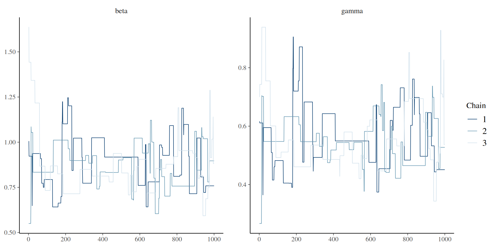The result: density over time
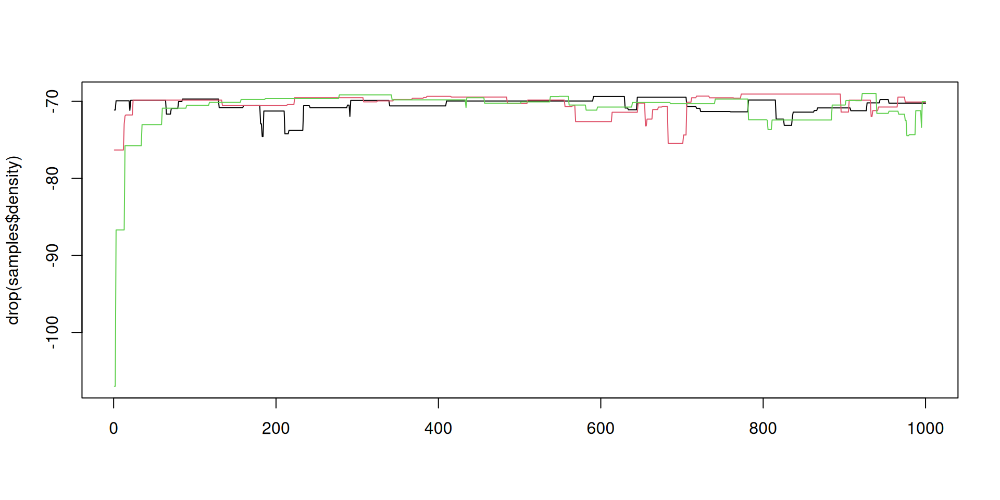The result: density over time
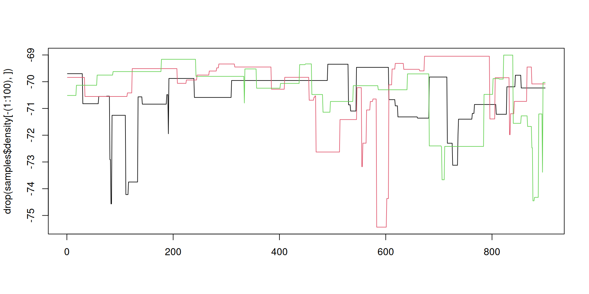Better mixing
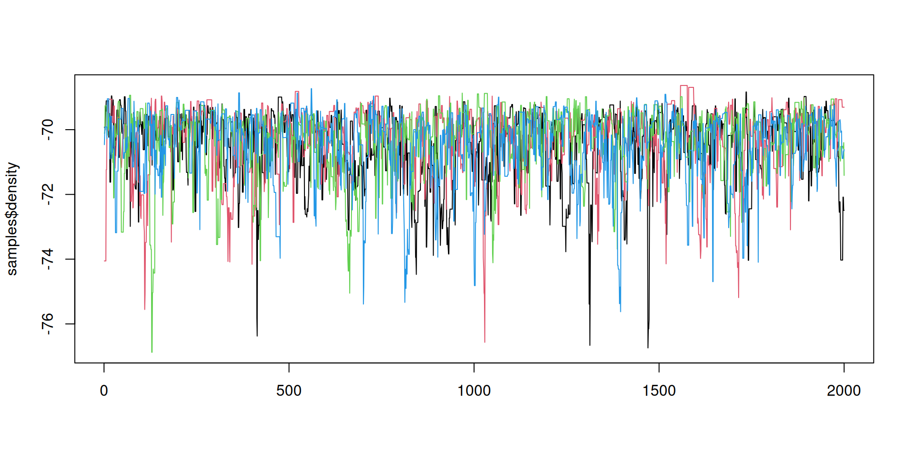Better mixing: the results
samples_df <- posterior::as_draws_df(samples)
posterior::summarise_draws(samples_df)
#> # A tibble: 2 × 10
#> variable mean median sd mad q5 q95 rhat ess_bulk ess_tail
#> <chr> <dbl> <dbl> <dbl> <dbl> <dbl> <dbl> <dbl> <dbl> <dbl>
#> 1 beta 0.843 0.830 0.121 0.113 0.664 1.07 1.01 458. 556.
#> 2 gamma 0.529 0.516 0.0953 0.0852 0.393 0.711 1.01 431. 579.Better mixing: the results
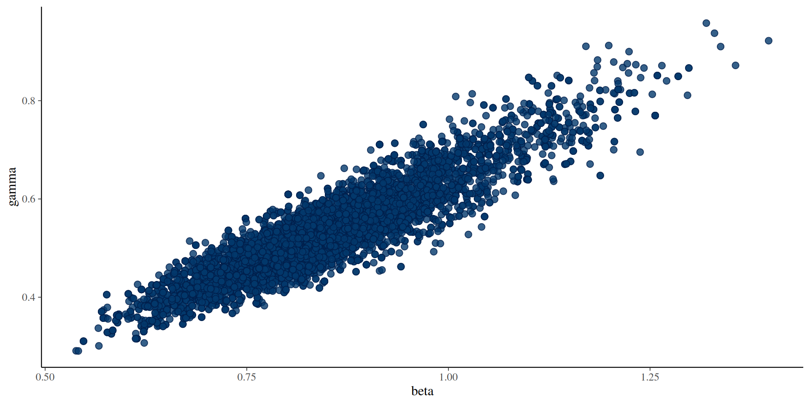Better mixing: the results
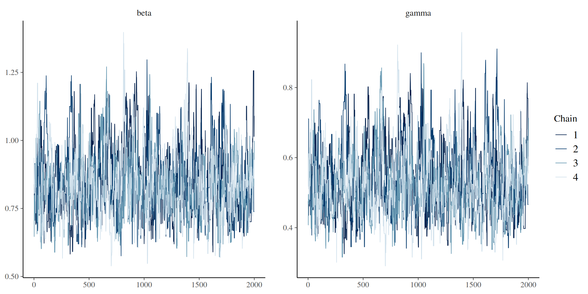Parallelism
Two places to parallelise
- among particles in your filter
- between chains in the sample
e.g., 4 threads per filter x 2 workers = 8 total cores in use
Configure the filter
Use the n_threads argument, here for 4 threads
requires that you have OpenMP; this is very annoying on macOS
Configure a parallel runner
Use monty_runner_callr, here for 2 workers
Pass runner through to monty_sample:
Run chains on different cluster nodes
Then run these chains in parallel on your cluster:
monty_sample_manual_run(1, "mypath")
monty_sample_manual_run(2, "mypath")
monty_sample_manual_run(3, "mypath")And retrieve the result
Saving history
- Save your trajectories at every collected sample
- Save the final state at every sample (for onward simulation)
- Save snapshots at intermediate timepoints of the state at every sample (for counterfactuals)
Trajectories
Trajectories
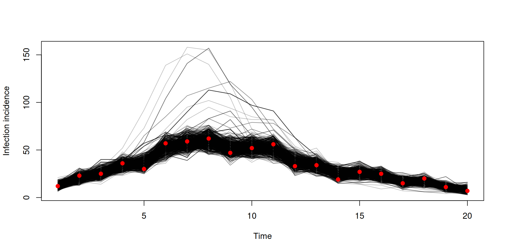Trajectories
Trajectories are 4-dimensional
These can get very large quickly - there are two main ways to help reduce this:
- Saving only a subset of the states
- Thinning
Saving a subset of trajectories
You can save a subset via specifying a named vector
Thinning
While running
After running
- Thinning while running faster and uses less memory
- After running is more flexible (e.g. can plot full chains of parameters between running and thinning)
Deterministic models from stochastic
- Stochastic models written in odin, can be run deterministically
- Runs by taking the expectation of any random draws
- This gives two models for the price of one
- However it might not be suitable for all models
Fitting in deterministic mode
The key difference is to use dust_unfilter_create
Note as this is deterministic it produces the same likelihood every time
Fitting in deterministic mode
Stochastic v deterministic comparison
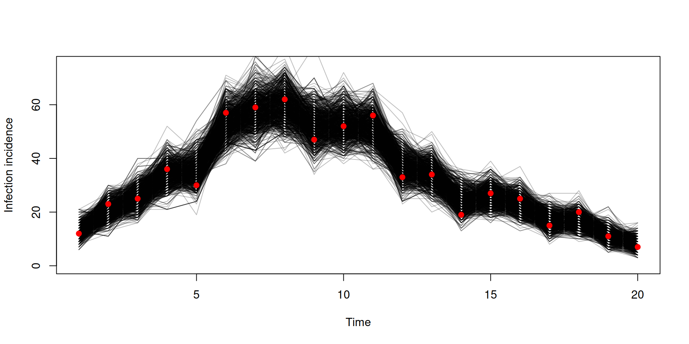Stochastic v deterministic comparison
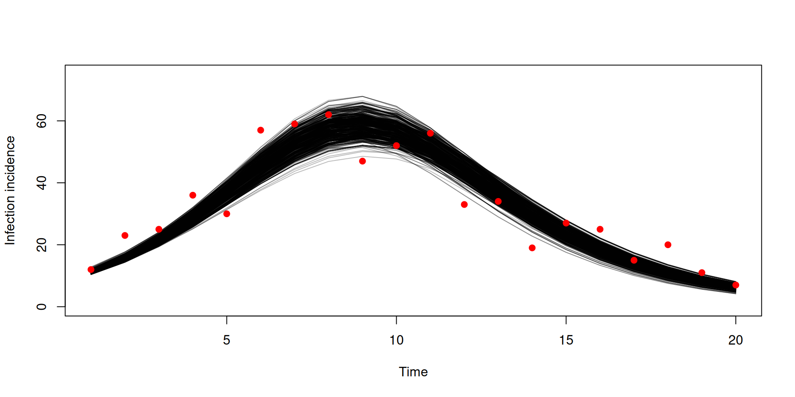Stochastic v deterministic comparison
pars_stochastic <- array(samples$pars, c(2, 500))
pars_deterministic <- array(samples_det$pars, c(2, 500))
plot(pars_stochastic[1, ], pars_stochastic[2, ], ylab = "gamma", xlab = "beta",
pch = 19, col = "blue")
points(pars_deterministic[1, ], pars_deterministic[2, ], pch = 19, col = "red")
legend("bottomright", c("stochastic fit", "deterministic fit"), pch = c(19, 19),
col = c("blue", "red"))Projections and counterfactuals
Let’s use some new data
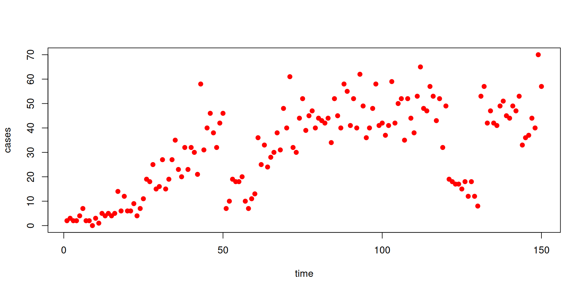Projections and counterfactuals
We’ll fit the data to an SIS model incorporating schools opening/closing
sis <- odin({
update(S) <- S - n_SI + n_IS
update(I) <- I + n_SI - n_IS
update(incidence) <- incidence + n_SI
initial(S) <- N - I0
initial(I) <- I0
initial(incidence, zero_every = 1) <- 0
schools <- interpolate(schools_time, schools_open, "constant")
schools_time <- parameter()
schools_open <- parameter()
dim(schools_time, schools_open) <- parameter(rank = 1)
beta <- ((1 - schools) * (1 - schools_modifier) + schools) * beta0
p_SI <- 1 - exp(-beta * I / N * dt)
p_IS <- 1 - exp(-gamma * dt)
n_SI <- Binomial(S, p_SI)
n_IS <- Binomial(I, p_IS)
N <- parameter(1000)
I0 <- parameter(10)
beta0 <- parameter(0.2)
gamma <- parameter(0.1)
schools_modifier <- parameter(0.6)
cases <- data()
cases ~ Poisson(incidence)
})Projections and counterfactuals
We will
- project forward from the end of the fits (day 150) to day 200
- run a counterfactual where the schools did not reopen on day 60, reopening on day 130
Fitting to the SIS model
packer <- monty_packer(c("beta0", "gamma", "schools_modifier"),
fixed = list(schools_time = schools_time,
schools_open = schools_open))
filter <- dust_filter_create(sis, time_start = 0, dt = 1,
data = data, n_particles = 200)
prior <- monty_dsl({
beta0 ~ Exponential(mean = 0.3)
gamma ~ Exponential(mean = 0.1)
schools_modifier ~ Uniform(0, 1)
})
vcv <- diag(c(2e-4, 2e-4, 4e-4))
sampler <- monty_sampler_random_walk(vcv)Fitting to the SIS model
We want to save the end state, and a snapshot at day 60 (where the counterfactual will diverge)
likelihood <- dust_likelihood_monty(filter, packer, save_trajectories = TRUE,
save_state = TRUE, save_snapshots = 60)
posterior <- likelihood + prior
samples <- monty_sample(posterior, sampler, 500, initial = c(0.3, 0.1, 0.5),
n_chains = 4)
samples <- monty_samples_thin(samples, burnin = 100, thinning_factor = 8)Fit to data
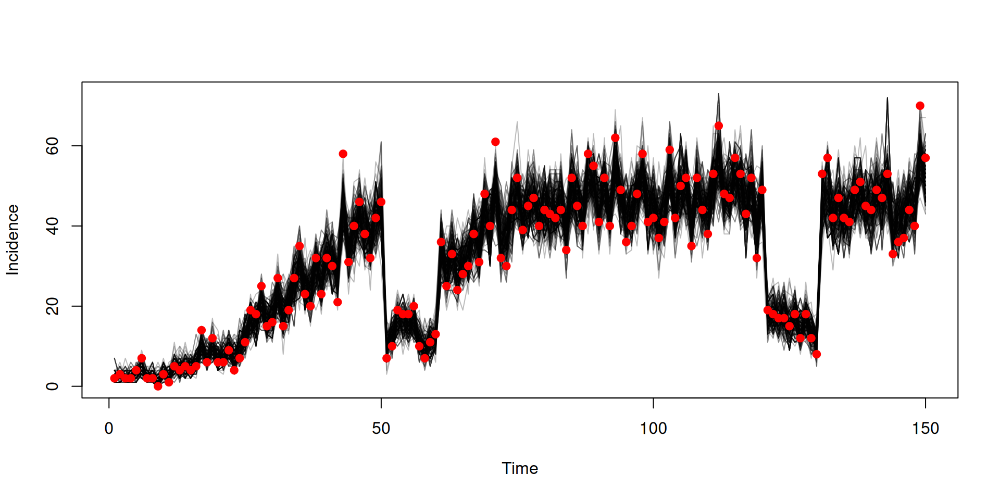Running projection using the end state
state <- array(samples$observations$state, c(3, 200))
pars <- array(samples$pars, c(3, 200))
pars <- lapply(seq_len(200), function(i) packer$unpack(pars[, i]))
sys <- dust_system_create(sis, pars, n_groups = length(pars), dt = 1)
dust_system_set_state(sys, state)
t <- seq(150, 200)
y <- dust_system_simulate(sys, t)
y <- dust_unpack_state(sys, y)Running projection using the end state
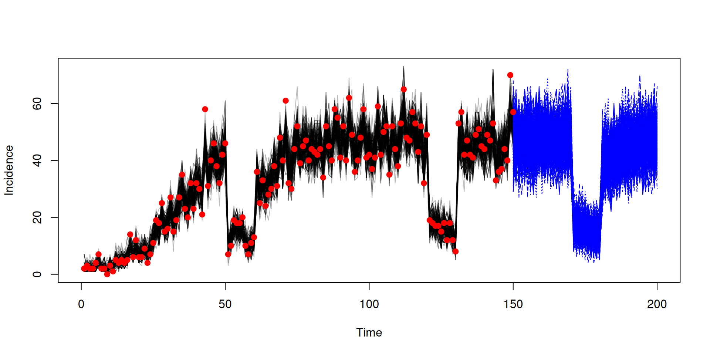Running counterfactual using the snapshot
snapshot <- array(samples$observations$snapshots, c(3, 200))
pars <- array(samples$pars, c(3, 200))
f <- function(i) {
p <- packer$unpack(pars[, i])
p$schools_time <- c(0, 50, 130, 170, 180)
p$schools_open <- c(1, 0, 1, 0, 1)
p
}
pars <- lapply(seq_len(200), f)
sys <- dust_system_create(sis, pars, n_groups = length(pars), dt = 1)
dust_system_set_state(sys, snapshot)
t <- seq(60, 150)
y <- dust_system_simulate(sys, t)
y <- dust_unpack_state(sys, y)Running counterfactual using the snapshot
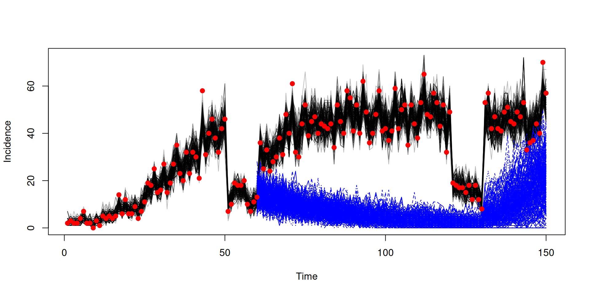Next steps
- forward time predictions
- posterior predictive checks
- rerun filter in MCMC
- multi-parameter models
- deterministic (expectation) models as starting points
- adaptive fitting (deterministic models only)
- HMC